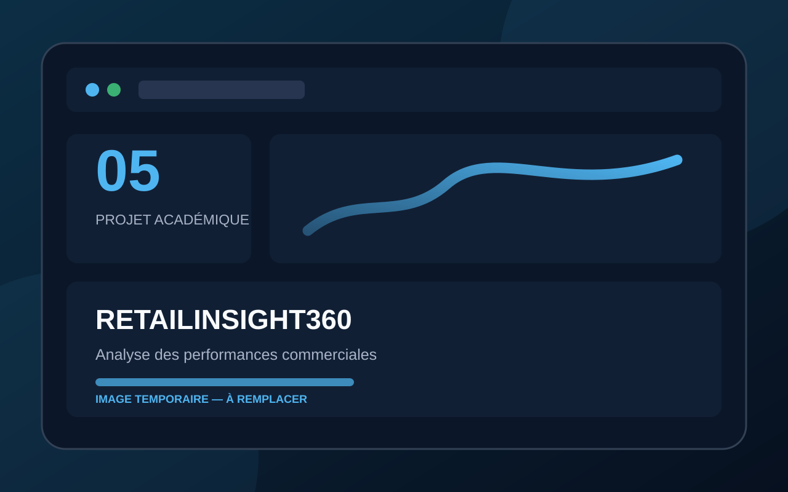

Étude de cas
RetailInsight360 — Analyse des performances commerciales
Analyse des avis clients, du NPS et de la qualité du réseau de magasins à partir d’une base enrichie.

Présentation et contexte
BestMarket souhaitait exploiter les retours clients. La base initiale devait être enrichie avec un référentiel magasins et contrôlée avant de répondre aux questions du service client.
Objectif
Formaliser le besoin, enrichir la base et produire les requêtes SQL nécessaires à l’analyse.
Besoin ou problème
Les données existantes ne permettaient pas de répondre à toutes les demandes métier.
Résultat attendu
Une base enrichie, un schéma et un dictionnaire mis à jour, ainsi que des requêtes documentées.
Mon rôle et mes réalisations
J’ai reformulé le besoin, importé et mis à jour la base, créé la table de référence, contrôlé la cohérence et rédigé les requêtes.
Principales fonctionnalités
- Table ref_magasin
- Dictionnaire mis à jour
- Schéma relationnel
- Contrôles qualité
- Calcul du NPS
- Requêtes documentées
Outils et technologies
Compétences mobilisées
- Expression de besoin
- Modélisation
- Qualité des données
- SQL
- Documentation
- Présentation
Savoir-être exploités
- Écoute
- Rigueur
- Clarté
- Synthèse
Livrables principaux
Expression du besoin, base enrichie, schéma, dictionnaire, requêtes et présentation.